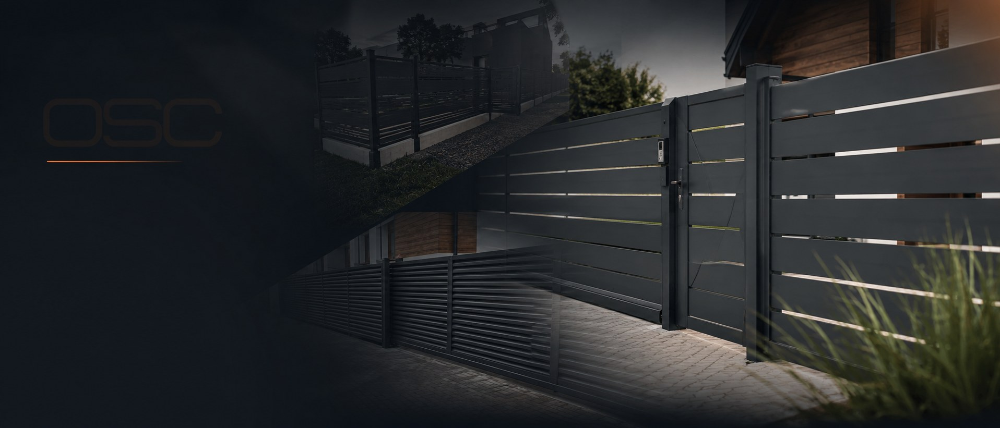
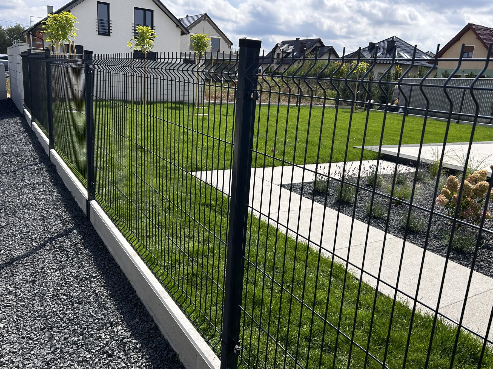
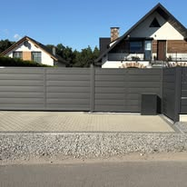
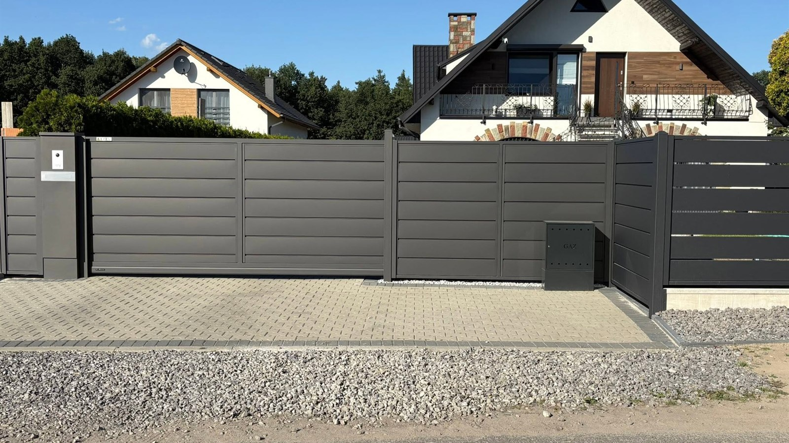
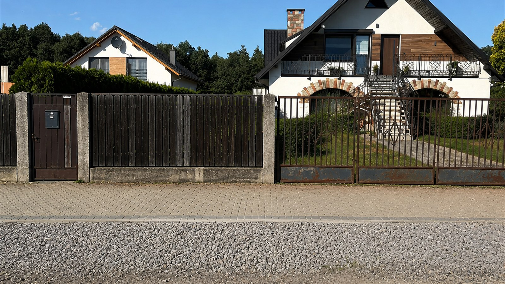

OSC OgrodzeniaKlasyczne i nowoczesne ogrodzenia

Ogrodzenia posesyjne i panelowe, bramy oraz automatyka. Doradztwo, montaż i serwis z bezpośrednim kontaktem do wykonawcy.
Ogrodzenia posesyjne, ogrodzenia panelowe oraz obsługa automatyki bramowej — konkretnie, lokalnie i bez pośredników.

Nowoczesne i klasyczne systemy dopasowane do domu, wjazdu i oczekiwanego poziomu prywatności.

Praktyczny sposób ogrodzenia bocznej i tylnej części posesji, także z podmurówką.

Montaż, regulacje i serwis automatyki bramowej po ustaleniu zakresu prac.


To właśnie te elementy najczęściej pojawiają się w publicznych opiniach klientów.
Kilka ujęć z publicznych materiałów OSC: nowoczesne fronty, ogrodzenia posesyjne i prace montażowe.

Nowe ogrodzenie potrafi całkowicie zmienić wygląd frontu posesji. Przesuń suwak i zobacz efekt modernizacji.
Ujęcie „przed” traktujemy jako wizualizację stanu posesji przed wymianą ogrodzenia, a nie jako potwierdzone zdjęcie sprzed tej konkretnej realizacji.


Prosty proces pozwala szybko ustalić, czego potrzebuje posesja i jaki zakres prac będzie właściwy.
Zadzwoń lub wyślij formularz. Podaj miejscowość i rodzaj planowanej usługi.
Omawiamy typ ogrodzenia, bramę, automatykę i warunki na posesji.
Weryfikujemy wymiary, układ terenu i informacje potrzebne do przygotowania rozwiązania.
Po zebraniu danych określamy zakres prac i propozycję realizacji.
W ustalonym terminie montujemy ogrodzenie, bramę lub automatykę.
Sprawdzamy ruch bramy i działanie automatyki oraz przekazujemy gotowe rozwiązanie.
Na stronie nie publikujemy wymyślonych cytatów. Aktualne recenzje najlepiej sprawdzić bezpośrednio w profilu Google firmy.
Aktualne recenzje wyświetlamy z profilu Google. Dzięki temu użytkownik widzi źródło opinii i może od razu przejść do pełnych recenzji.
Siedziba OSC znajduje się przy ul. Wolności 33B w Chudowie. Zadzwoń i podaj miejscowość realizacji — od razu ustalisz możliwość dojazdu.
Wyślij zapytanie albo zadzwoń i krótko opisz planowaną realizację.